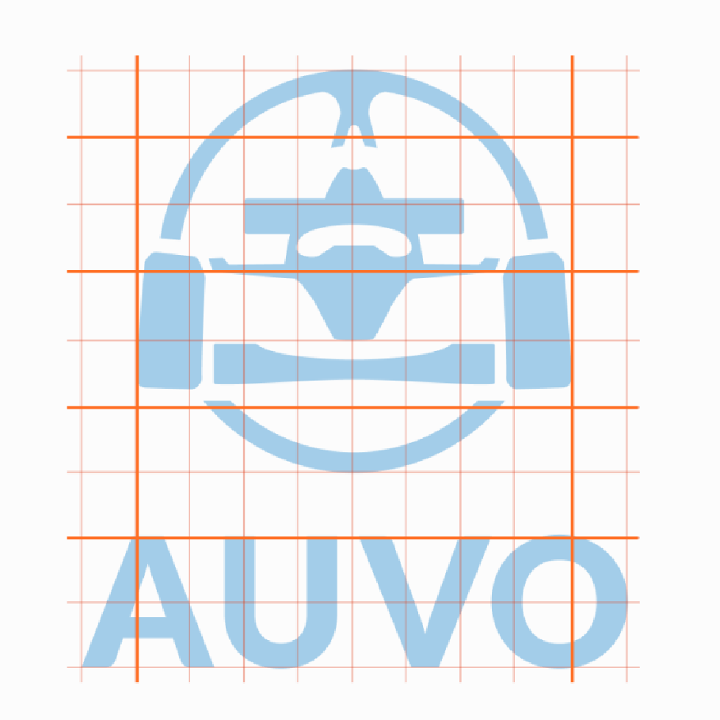
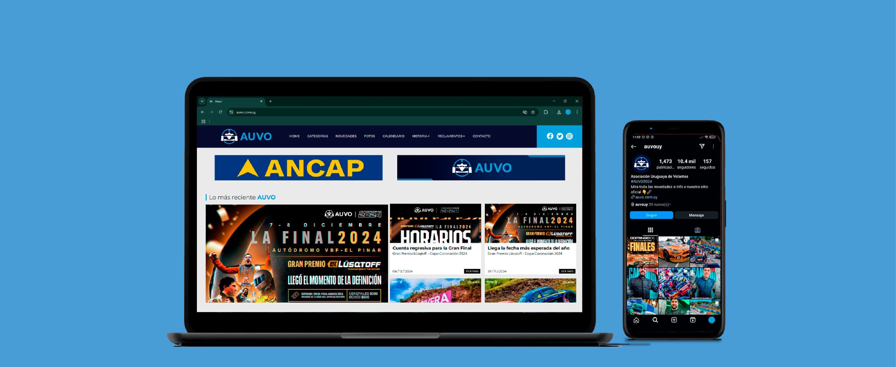
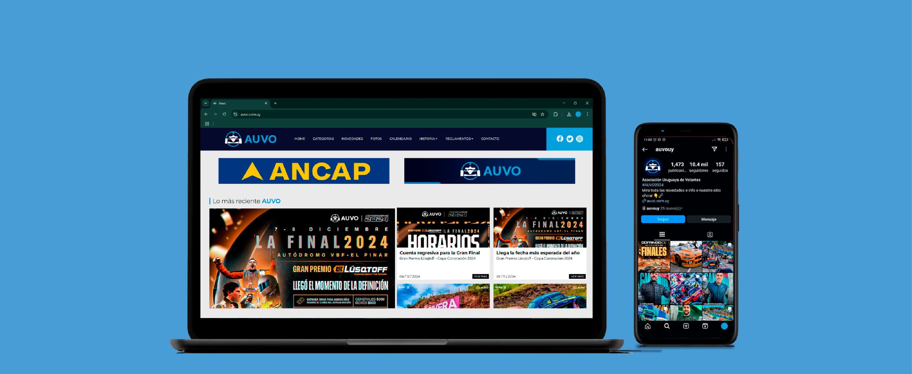
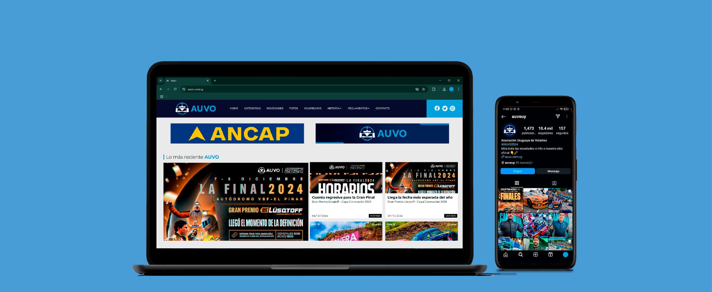

DISEÑO DE IDENTIDAD 1
Para el último ejercicio se realizó el análisis y rediseño del logotipo de una entidad preexistente. Teniendo en mente este propósito elegí la Asociación Uruguaya de Volantes (desde ahora, AUVO), generando así dos propuestas diferentes de acuerdo a los requerimientos de la letra de entrega.
Una de ellas debía mantener una de las características originales del logotipo, ya fuera su estructura o componentes. Partiendo de esta base decidí modernizar su aspecto y quitando detalles pequeños que se perdían fácilmente. Para el ejercicio también se diseñaron mock-ups y un manual de marca, los cuales se encuentran a continuación.


 

